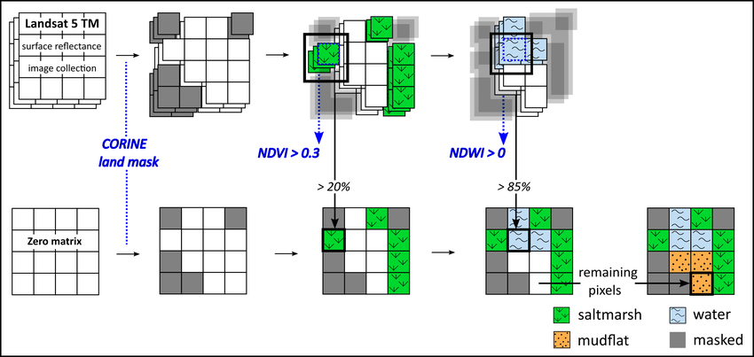

7 Week_7 Classification I
7.1 Knowledge From the Lecture
7.1.1 Classification and regression trees (CART)
7.1.1.1 Classification
Classification trees are used to categorise data into two or more discrete categories Regression trees deal with situations where linear regression does not apply Improve the predictive power of the model by splitting the data into smaller chunks When creating a decision tree, the final leaf nodes may be a mixture of categories (impurity) and the Gini impurity is used to quantify this impurity. Select the attribute with the lowest impurity as the top of the tree to begin the decision process. Calculate the Gini impurity and use it to assess the quality of the data segmented when constructing the decision tree, with smaller values indicating purer data
7.1.1.2 Regression trees
Regression trees predict continuous values, such as the amount of pollution, while classification trees predict discrete values, such as land cover type. When linear regression does not fit the data well, regression trees are recommended as an alternative. In a regression tree, the data is divided into multiple parts based on thresholds or nodes. The sum of squared residuals (SSR) of these parts is calculated and the threshold with the lowest SSR becomes the starting point or root of the tree. The process can be repeated to further segment the data, and a minimum number of observations can be set to prevent overfitting.

7.1.2 Overfitting
If a leaf node contains only one person or one pixel value, overfitting may occur. The best models have low bias and low variability and are able to make consistent predictions across different datasets (e.g., training and test sets). To prevent overgrowth of the decision tree, its methods include limiting the growth of the tree (e.g., a leaf contains at least 20 pixels), and weakest link pruning (pruning based on the tree score). The number of leaves per tree and the value of α (regularisation parameter) were adjusted to reduce overfitting. Starting from α = 0, the α values were gradually increased until the pruning could reduce the tree score, and then these α values were saved. The tree score is the sum of squared residuals (SSR) plus the tree penalty (α multiplied by the number of leaves T). Different α values produce different subtrees and tree scores. Use different values of α to train the data and calculate the SSR on the test data to select the tree with the smallest score. Repeat the above process with cross-validation (10 cross validations) so as to find the α value that on average has the lowest SSR on the test data. The tree corresponding to this α-value, trained using all the data, is then selected. For classification trees, the SSR will be replaced by an impurity metric (e.g., Gini impurity).
7.1.3 Random Tress
A random forest consists of a number of categorical decision trees that are constructed by self-sampling the data (bootstrap samples) and constructing decision trees from randomly selected variables. At the nodes, the algorithm again selects from a random subset of variables. This process is repeated over and over again, resulting in multiple trees, or a “forest”. As new data passes through these trees, each tree gives a prediction, and the one with the most votes is chosen as the final prediction. The “bagging” technique in Random Forest is self-sampling by replacing data. Each tree is trained using approximately 70% of the training data, and the remaining 30% is called out-of-bag (OOB) data. The out-of-bag data is used to test the forest to evaluate the performance of the model and finally the classification result with the most votes is selected. The percentage of classification errors for out-of-bag data is known as OOB error. No pruning is done in a random forest and the tree can grow as much as possible. The out-of-bag error is derived by calculating the average prediction error for all trees that do not use certain values (e.g., rows in the data). Validation data, unlike out-of-bag data, is never included in the construction of the decision tree.
7.1.4 How to apply to the imagery
Two main approaches to image classification: supervised learning and unsupervised learning. Supervised learning learns from data and labels new data through machine learning pattern recognition, while unsupervised learning analyses undefined data through clustering and then labels these clusters.
Supervised Learning:
- Generic of supervised learning basically follows the process includes: category definition, preprocessing, training, pixel assignment and accuracy assessment.
Unsupervised Learning:
- The DBSCAN algorithm, which forms clusters by setting a radius (Epsilon) and a minimum number of points, and can be optimised by iteration and PCA.
- The ISODATA algorithm, a variant of k-means, which adds the ability to merge clusters that are too close together or to split clusters that are too long, and controls the clustering process according to the number of pixels in the cluster, the number of iterations, etc. 3. the “Cluster busting” algorithm, which forms clusters by setting a radius (Epsilon) and a minimum number of points.
- The “Cluster busting” method, which improves classification accuracy by masking and reclassifying clusters that are difficult to label or incorrectly labelled.
Maximum likelihood
Maximum likelihood & Support Vector Machine Maximum Likelihood Estimation (MLE) is a statistical method for estimating parameters in probabilistic models. The basic idea of the method is to select the parameter value that best explains the observed data from all possible parameter values. In remote sensing, for example, it uses probabilities to assign each pixel in an image to the most likely land cover type, and probability thresholds can be set to determine whether or not to classify it.
Support Vector Machine
Support Vector Machine (SVM) is a supervised learning model used for classification and regression analysis. Suppose we have a training dataset in which each data point belongs to one of two classes.The goal of the SVM is to find a hyperplane such that the hyperplane separates the two classes of data points as much as possible.

7.2 Practical
7.2.1 Supervised Classification
Select a Study Area, select the training feature collections on the map, in the following figure selected forest, water,developed,herbaceous as the collect feature.Use ee.Classifier.smileCart) and train it. But the result is not very good, maybe the initial data set selection is not very good.
7.2.2 Unsupervised Classification
Same result of Unsupervised trained Classification
7.3 Application
The roots of remote sensing machine learning can be traced back to the 1990s. It was initially introduced as an approach to remote sensing for automated knowledge infrastructure building. Since then it has evolved and found applications in a variety of fields, including remote sensing and geoscience(Challa, Sridhar, and Shyam Mohan 2022). Machine learning algorithms such as deep learning are popular in remote sensing due to their ability to analyse large amounts of data and achieve high accuracy(Jeon 2023). These algorithms have been used for tasks such as image classification, scene understanding and material recognition(Rewhel et al. 2023). The availability of datasets with domain-specific attributes further facilitates the application of machine learning techniques in remote sensing.
The popularity of the Random Forest algorithm in the remote sensing community is attributed to its excellent classification accuracy. The algorithm utilises an integrated classifier consisting of multiple decision trees to effectively deal with high-dimensional data, and especially excels in reducing the dimensionality of hyperspectral data, thanks to the variable importance scores it provides(Bahrami, Hassani, and Maghsoudi 2018). I believe that Random Forest is efficient because it incorporates the judgement of numerous decision trees to improve the overall accuracy by aggregating their predictions and adapting to the complexity and diversity of remote sensing data.
Support Vector Machines (SVMs) are particularly suitable for dealing with classification problems, distinguishing categories by defining optimal hyperplanes in high-dimensional spaces. It has demonstrated its strong performance in applications such as classification of multispectral remote sensing images(Feizi and Nazemi 2022).The ability of SVM to deal with nonlinear and high-dimensional data is particularly well suited to the needs of the remote sensing domain, but its optimal performance relies on accurate kernel function selection and parameter tuning.
Overfitting is a problem that occurs when model complexity is too high, causing the model to memorise noise in the training data rather than regularities. While such a model is effective on the training set, it may not generalise to new data. Strategies to avoid overfitting include using appropriate dataset sizes, simplifying model complexity, and employing methods such as cross-validation to ensure that models generalise well(Schmidt, n.d.). Understanding the limitations of the model and continuously monitoring its predictive ability on new data during training are key to avoiding overfitting.
7.4 Reflection
Reviewing this week’s learning diary on remote sensing, I found the exploration of classification trees and regression trees (CART) particularly enlightening. The distinction between classification trees, which categorize data into discrete sets, and regression trees, which predict continuous values, is a fundamental concept that resonates with me. The application of the Gini impurity measure in the improved classification tree decision process highlights the importance of data purity and precision in environmental analysis, which I had not fully appreciated before.
The discussion of overfitting is equally crucial, illustrating the delicate balance needed to avoid creating overly complex models. The strategies mentioned, such as limiting tree growth or applying the weakest link pruning, are practical solutions that I could envision applying in future projects to improve model reliability.
The introduction of random forests expanded my understanding of set learning techniques. This approach combines multiple decision trees, improves prediction accuracy and controls overfitting, and demonstrates the power of collective intelligence over a single predictive model, which is fascinating.
Applying these concepts to images, especially through supervised and unsupervised learning, is the most fascinating part. Practical examples, such as the use of random forest classifiers in Google Earth Engine, give us a first-hand sense of the potential of remote sensing in environmental analysis. It’s curious to think about the wide range of applications these methods have, from land cover classification to pollution monitoring.
This week’s diary reveals the multifaceted nature of remote sensing and machine learning, giving me a greater appreciation of their role in understanding and protecting the environment. The evolving nature of these technologies, and their potential to have a profound impact on real-world issues, is incredibly motivating.
7.5 Reference
Bahrami, Yousef, Hossein Hassani, and Abbas Maghsoudi. 2018. “Investigating the Capabilities of Multispectral Remote Sensors Data to Map Alteration Zones in the Abhar Area, NW Iran.” Geosystem Engineering 24 (December): 1–13. https://doi.org/10.1080/12269328.2018.1557083.
Challa, Nagendra Panini, Parupally Sridhar, and J. S. Shyam Mohan. 2022. “A Machine Learning Perspective for Remote Sensing.” In, edited by Pala Gireesh Kumar, Kolluru V. L. Subramaniam, S. Moses Santhakumar, and Neelima Satyam D., 553–59. Lecture Notes in Civil Engineering. Singapore: Springer Nature. https://doi.org/10.1007/978-981-19-0189-8_45.
Feizi, Amir, and Alireza Nazemi. 2022. “Classifying Random Variables Based on Support Vector Machine and a Neural Network Scheme.” Journal of Experimental & Theoretical Artificial Intelligence 0 (0): 1–24. https://doi.org/10.1080/0952813X.2022.2104385.
Jeon, Gwanggil. 2023. “Advanced Machine Learning and Deep Learning Approaches for Remote Sensing.” Remote Sensing 15 (11): 2876. https://doi.org/10.3390/rs15112876.
Laengner, Marieke, Koen Siteur, and Daphne Wal. 2019. “Trends in the Seaward Extent of Saltmarshes Across Europe from Long-Term Satellite Data.” Remote Sensing 11 (July): 1653. https://doi.org/10.3390/rs11141653.
Núñez, Juan Manuel, Sandra Medina-Fernández, F. Gerardo Ávila, and Jorge Montejano. 2019. “High-Resolution Satellite Imagery Classification for Urban Form Detection.” In, 1–9. https://doi.org/10.5772/intechopen.82729.
Phan, Thanh Noi, Verena Kuch, and Lukas W. Lehnert. 2020. “Land Cover Classification Using Google Earth Engine and Random Forest ClassifierThe Role of Image Composition.” Remote Sensing 12 (15): 2411. https://doi.org/10.3390/rs12152411.
Rewhel, Ekram M., Jianqiang Li, Amal A. Hamed, Hatem M. Keshk, Amira S. Mahmoud, Sayed A. Sayed, Ehab Samir, et al. 2023. “Deep Learning Methods Used in Remote Sensing Images: A Review.” Journal of Environmental & Earth Sciences 5 (1): 33–64. https://doi.org/10.30564/jees.v5i1.5232.
Schmidt, James. n.d. “Testing for Overfitting.” https://doi.org/10.48550/arXiv.2305.05792.
Sheykhmousa, Reza M, and Masoud Mahdianpari. 2020. “Support Vector Machine Vs. Random Forest for Remote Sensing Image Classification: A Meta-Analysis and Systematic Review.” IEEE Journal of Selected Topics in Applied Earth Observations and Remote Sensing, October. https://doi.org/10.1109/JSTARS.2020.3026724.